6.1- GRAPHICAL METHOD FOR TRAYED TOWERS & ALGEBRAIC METHOD FOR DETERMINING N
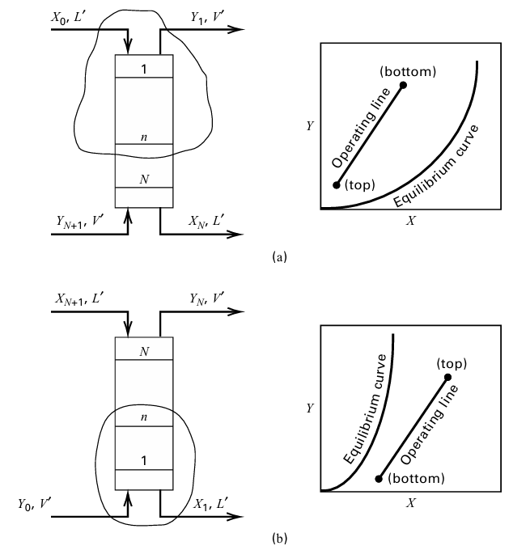
역류식 트레이형 흡수탑(또는 탈착탑)에서 흡수탑은 상단(흡수제가 유입되는 곳)에서 하단으로, 탈착탑은 하 단(탈착제가 유입되는 곳)에서 상단으로 번호가 매겨져 있다. 이때 각 트레이에서 나오는 증기와 액체는 상평형 상태에 있다. 흡수탑에서는 용질만 한 상에서 다른 상으로 이동한다고 가정한다.
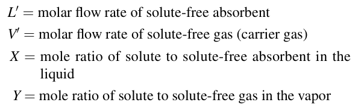
이때L'과 V'은 탑 전체에 걸쳐 일정하게 유지된다고 가정한다.
1. Equilibrium Curves
어떤 스테이지에서, K-값은 다음과 같다.
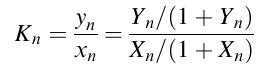 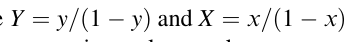
일반적으로 이 곡선은 직선이 아니지만 원점을 지난다. 만약 용질이 액상에서 화학 반응을 통해 비휘발성 용질로 완전히 비가역적으로 변환된다면, 평형 곡선은 원점을 지나는 기울기가 0인 직선이 될 것이다.
.2 Operating Lines (from Material Balances)
그림1 의 탑 양 끝단에는 유입 및 유출 흐름이 쌍을 이룬다. 일단 먼저 흡수를 보도록 하자.
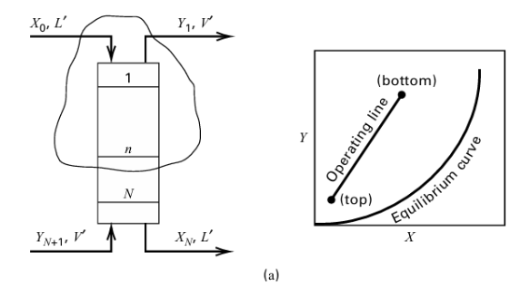
(X0, L0 and Y1, V0) 이 탑 상부이고 (YN+1, V0 and XN, L0)이 탑 바텀이다. 이는 탑을 위에서부터 1...N으로 매겨놓고 들어오고 나가는 걸 표시하면 된다.
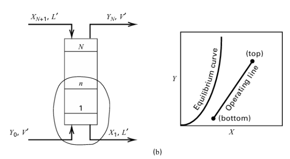
만약 탈거부면 (XN+1, L0 and YN, V0) at the top and (Y0, V0 and X1, L0) at the bottom.
이제 이를 물질수지를 세워보자. 들어오는 것=나가는 것으로 세운 수지이다.
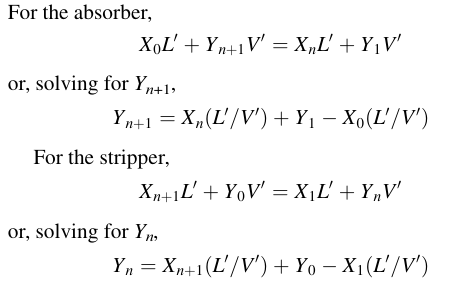
이때 각각의 두 식 Y를 조작선이라고 부른다. 종점은 탑의 상단과 하단의 조건을 나타낸다. 흡수선은 평형선 위에, 탈거선은 아래에 위치하는 것을 볼 수 있다. 둘다 기울기는 L/V임에 유의하자.
3 Minimum Absorbent Flow Rate (for 무한 Stages)
다음 그림에는 네 가지 흡수제 유량에 대한 작동선이 나와 있으며, 각 선은 종점을 통과한다.
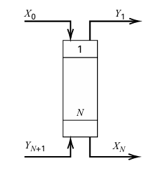
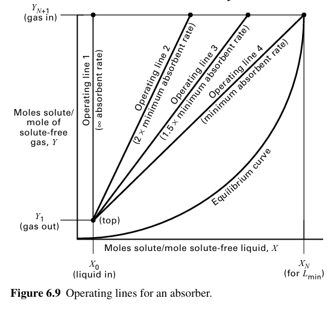 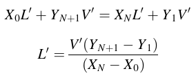
이때 기울기는 L'/V'이다. L이 작아지면 점점 기울기가 낮아지며 L'min에 도달하면 핀치포인트가 형성된다.
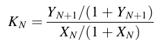
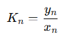
에서 solute-free basis로 다음과 같이 나타낼 수 있다.
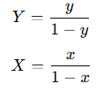
이렇게 보면, Y는 용질 mol/용질 아닌 기체 mol, X는 용질 mol/용질 아닌 액체로 볼 수 있다. 따라서
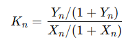
이렇게 볼 수 있으며 이는 solute-free basis로 보면 된다.
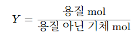
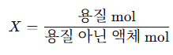
위 식을 XN에 대해서 풀고, 식 6-7에 대입하면 다음과 같다.
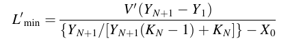
이건 외우기 힘든데, 대신 희석액체이고 들어오는 액체의 용질 몰수가 0에 가까운 순수액이라고 가정하면 다음과 같다.
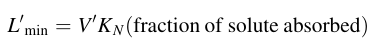
이것과 비슷한 논의가 V'min에도 존재한다.
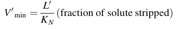
4 Number of Equilibrium Stages
원하는 흡수/탈거를 하려면 이론적으로 완벽한 tray가 몇 개 필요하냐를 구하는 부분
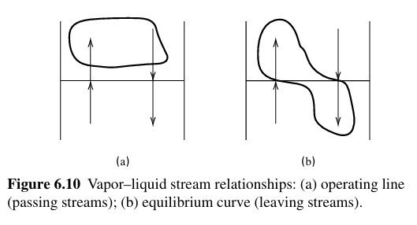
그림 6.10a에서 볼 수 있듯이, 작동선은 두 단계 사이를 위로 통과하는 증기 내 용질 농도와 동일한 두 단계 사이를 아래로 통과 하는 액체 내 용질 농도 사이의 관계를 나타낸다. 그림 6.10b는 평형 곡선이 평형 단계를 떠나는 증기 내 용질 농도와 동일한 단계를 떠나는 액체 내 용질 농도 사이의 관계를 나타낸다는 것을 보여준다.
이는 탑 타워에서 시작하여 타워의 바텀으로 계단을 형성하는 방식이다. 평형선은 “한 tray에서 나가는 기체와 액체의 평형 관계”
조작선은 “tray 사이를 지나가는 기체와 액체의 물질수지 관계” . 이 둘 사이를 계단식으로 이동하면 이론단수를 셀 수 있다.
흡수탑 계단 작도는: (X0,Y1)→평형선→조작선→평형선→조작선→⋯→(XN,YN+1) 이때 평형선에 한번 닿으면 그것이 1 이론단이다.
ALGEBRAIC METHOD FOR DETERMINING N
위까지는 그래프를 이용한 작도였다. 이제 그래프 계단 작도 없이, Kremser 식으로 흡수탑/탈거탑의 이론단수 N 를 계산하는 방법을 알아보자.
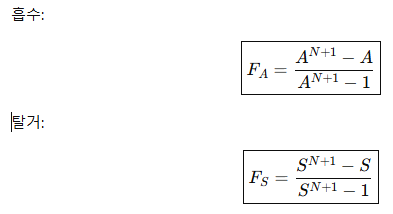
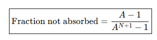
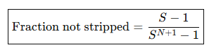
일단 크렘저 식이 이렇게 된다는 것을 알고 있을 것이다( 알아야 한다...) 여기서 N은 단수이므로, 그냥 바로 흡수 비율을 넣고 풀어버리면 된다.
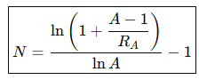
여기서 RA는 흡수에서 흡수안된 비율이며 탈거면 마찬가지로 탈거에서 흡수 안된 비율이다. 예를 들어 97% 흡수라면 0.03을 쓰면 된다. 하지만 여기서 한가지 아쉬운 것은, LN이 들어가기 때문에 A=1, S=1일 때 바로 못 쓴다. 따라서 이 경우는 극한을 사용한다.
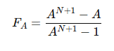 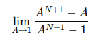
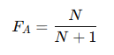
일 때는 이론단수 N개로 제거 가능한 비율이 위와 같다.
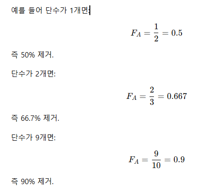
예제를 통해 풀어보자.
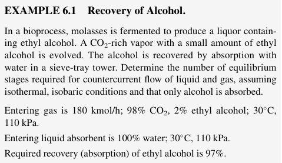
CO₂-rich gas 안에 들어 있는 ethyl alcohol을 물로 흡수한다. 에탄올 97%를 회수하려면 이론 평형단수 가 몇 단 필요한가?
이 문제를 그래프법, 즉 Y−X diagram에서 평형선 + 조작선 + 계단 작도로 풀어볼 것이다. 조건은 기체 180 kmol/h, 조성 98 mol% CO₂ + 2 mol% ethanol, 흡수제는 순수 물, 30°C, 110 kPa, ethanol 회수율 97%이다. 수식 입력을 위해 워드로 풀어보았다.
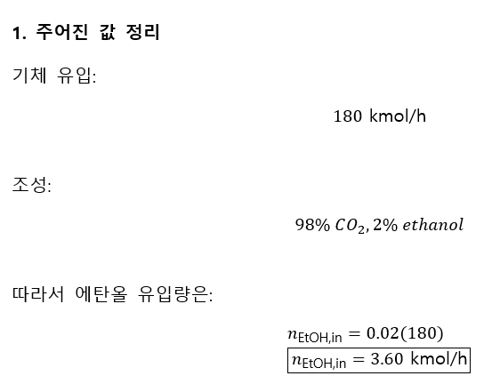 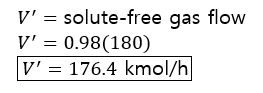
여기서 V'는 에탄올을 제외한 기체 유량, 즉 CO₂ 유량이다.
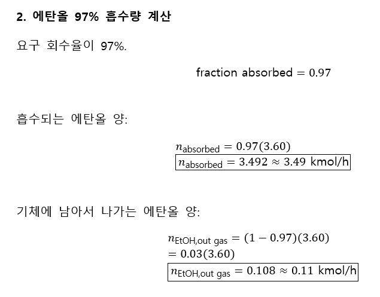
들어온 에탄올 3.60 중에서 3.49는 물로 가고, 0.11은 기체로 빠져나간다.
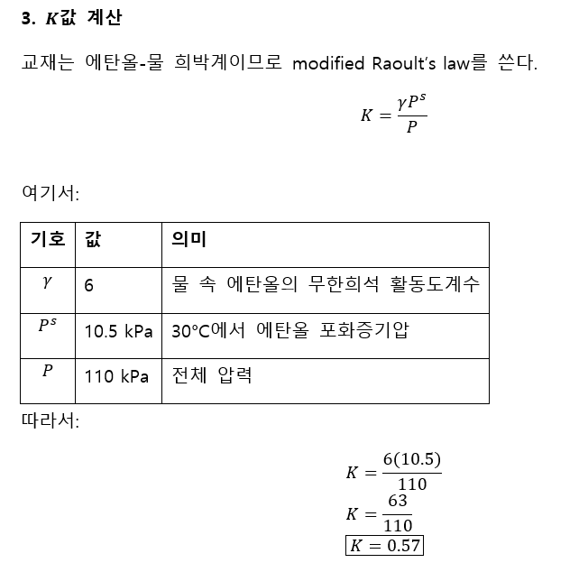
여기서 K는 에탄올이 기체로 얼마나 남아있는지를 나타낸다.
4. 최소 흡수제 유량
희박용액이고 들어오는 흡수제가 순수 물일 경우 다음식이 성립함을 위에서 배웠다.
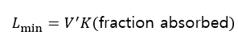
따라서 대입을 해보면
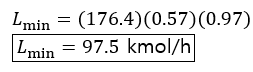
이때 이건 말그대로 최소값이기에 실제 흡수제 유량을 1.5배를 해서 잡도록 하자.
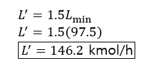 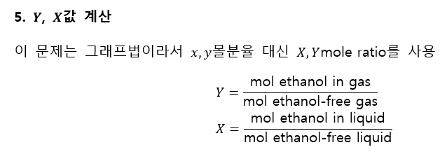
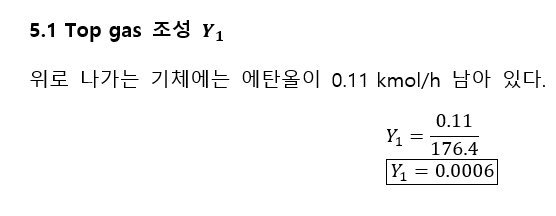
5.2 Bottom gas 조성 YN+1
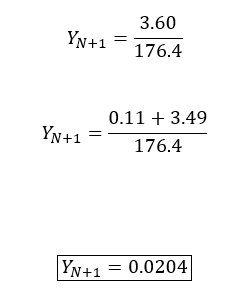
5.3 Top liquid 조성 X0=0(순수 물)
5.4 Bottom liquid 조성 XN
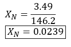
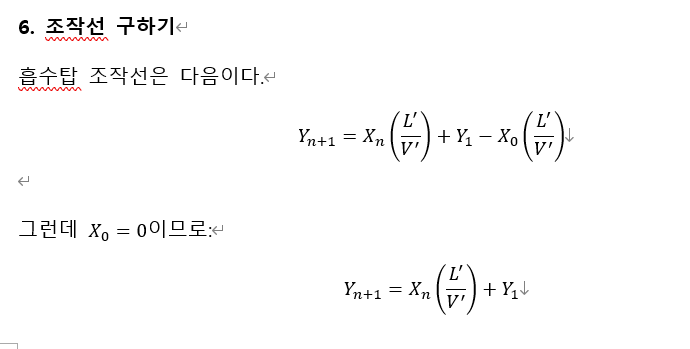 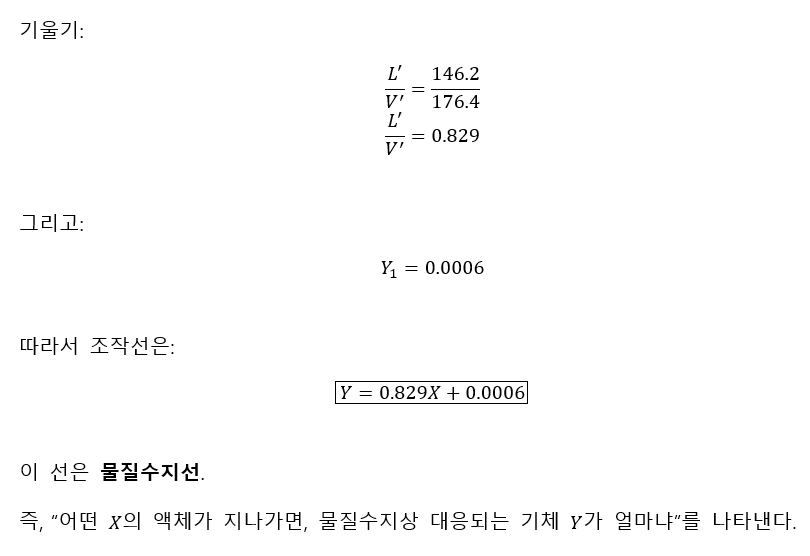
7.평형선 구하기
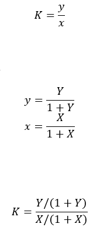
여기에 K=0.57을 넣는다. 이후 Y에 대해서 정리하면
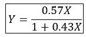
근데 여기서 희박 용액에서는 X가 작으므로 1+0.43X≈1로 볼 수 있다. Y≈0.57X을 써도 되긴한데 위험하긴하다.
8. 그래프에서 해야 하는 일
이제 Y-X그래프에 두 선을 그린다. 조작선 Y=0.829X+0.0006
평형선 Y=0.57X/(1+0.43X)
흡수탑에서는 조작선이 평형선 위에 있어야 한다.
왜냐하면 흡수가 일어나려면 실제 기체 농도 Y가 평형 기체 농도 Y^*보다 커야 하기 때문
Y>Y^* 그래야 기체 속 에탄올이 액체로 넘어감.
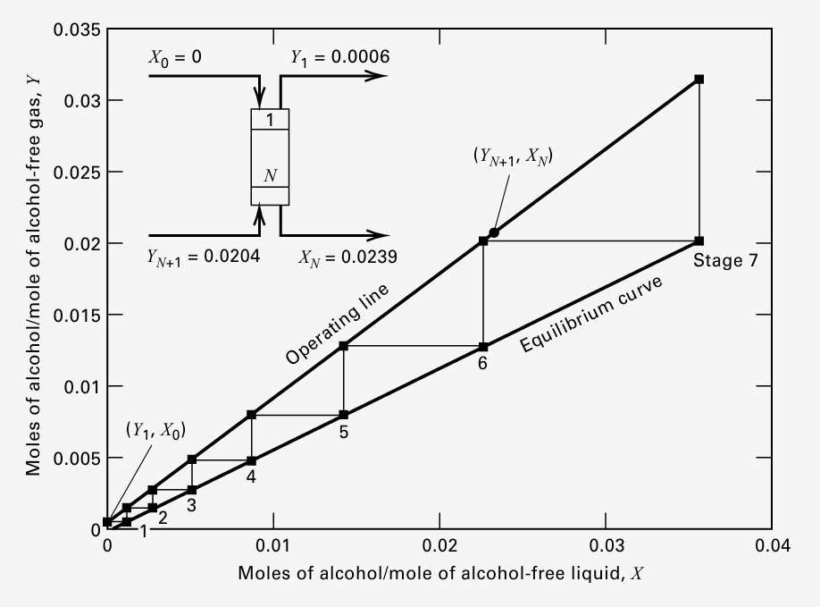 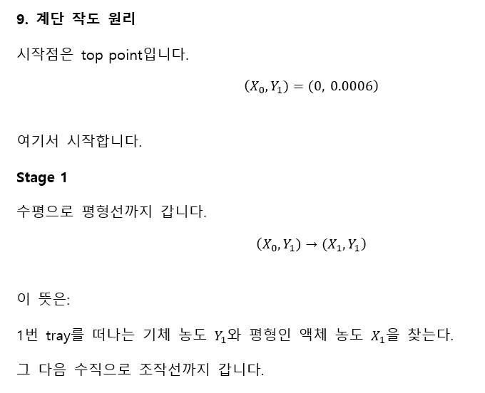 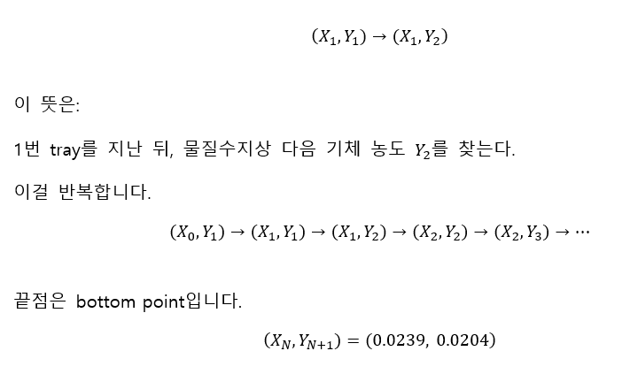 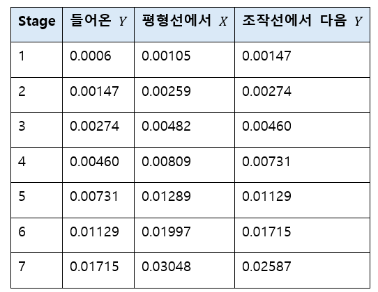
위 표는 숫자로 그래프를 찍어본 것이다.
목표 bottom gas는: YN+1=0.0204이고 6단 후에는: Y≈0.01715 으로 아직 부족하다. 7단 전체를 쓰면: Y≈0.02587 으로 목표를 넘어선다. 따라서 필요한 이론단수는: 6<N<7이다.
교재 그래프에서는 “6단보다 조금 큼”으로 읽고, 설계상 올림해서 7 theoretical stages를 제시하는데, 이것과 비슷한 논리라고 보면된다.
마지막으로 크렘저 식으로 검사해보면 다음과 같다.
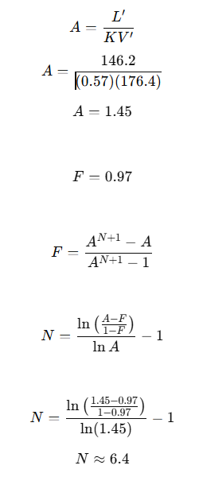
정리하면, 이 문제는 K로 평형선을 만들고, 물질수지로 조작선을 만든 다음, Y−X 그래프에서 계단을 그려 N을 세는 문제이다. 계산하면 6단보다 조금 더 필요하므로 최종 답은 7 theoretical stages